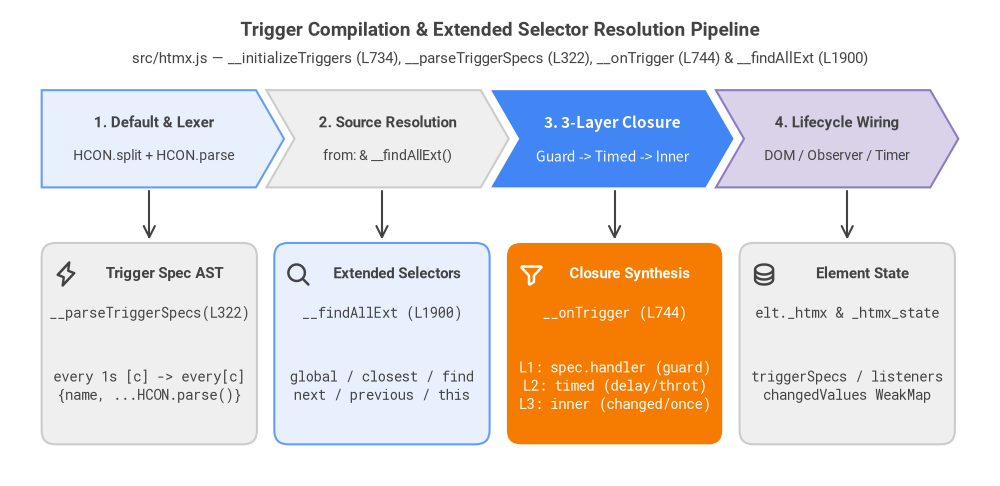
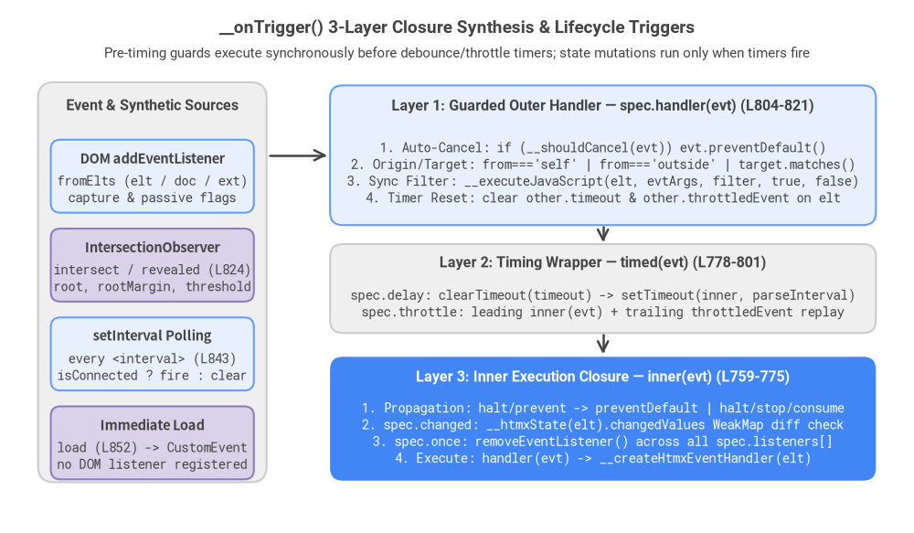
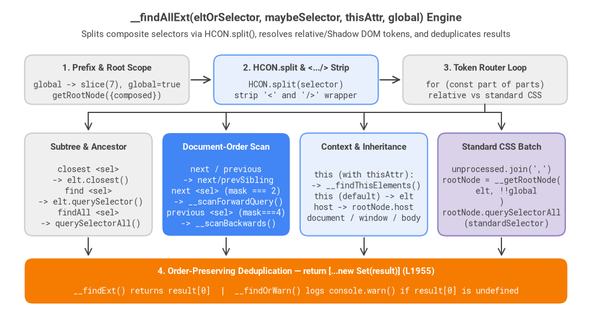

3. Trigger & Selector Parsers
htmx v4.0.1 replaces rigid regular-expression attribute parsers with two composable micro-engines built on top of HCON: a 3-Layer Trigger Closure Synthesizer (__parseTriggerSpecs and __onTrigger, lines 322–331 and 734–872) and an Extended CSS Selector Engine (__findAllExt, lines 1895–1994) capable of traversing Shadow DOM boundaries, inheritance chains, and full document-order bitmasks.

Source Code
from drawlib.canvas import save, setup
from drawlib.fonts import FontRoboto, FontSourceCode
from drawlib.icons import phosphor
from drawlib.lines import line
from drawlib.shapes import rectangle
from drawlib.smartarts import ChevronProcess
from drawlib.styles import Styles
from drawlib.text import text
setup(width=144, height=70)
title_s = Styles.DarkBold.patch(text_size=13.5, text_font=FontRoboto.ROBOTO_BOLD)
sub_s = Styles.Dark.patch(text_size=10.5, text_font=FontRoboto.ROBOTO_REGULAR)
card_title_s = Styles.DarkBold.patch(text_size=11.0, text_font=FontRoboto.ROBOTO_BOLD)
code_s = Styles.Dark.patch(text_size=10.0, text_font=FontSourceCode.ROBOTO_MONO)
white_title_s = Styles.WhiteBold.patch(text_size=11.0, text_font=FontRoboto.ROBOTO_BOLD)
white_code_s = Styles.White.patch(text_size=10.0, text_font=FontSourceCode.ROBOTO_MONO)
text((72, 65.5), "Trigger Compilation & Extended Selector Resolution Pipeline", style=title_s)
text((72, 61.5), "src/htmx.js — __initializeTriggers (L734), __parseTriggerSpecs (L322), __onTrigger (L744) & __findAllExt (L1900)", style=sub_s)
# Top pipeline using ChevronProcess
pipeline = ChevronProcess(
style=Styles.Neutral,
text_style=Styles.DarkBold.patch(text_size=11.0, text_font=FontRoboto.ROBOTO_BOLD),
description_style=Styles.Dark.patch(text_size=10.0, text_font=FontRoboto.ROBOTO_REGULAR),
corner_angle=60.0,
spacing=1.5,
flat_left_end=True,
)
pipeline.add("1. Default & Lexer", description="HCON.split + HCON.parse", style=Styles.PrimaryNeutral)
pipeline.add("2. Source Resolution", description="from: & __findAllExt()", style=Styles.Neutral)
pipeline.add("3. 3-Layer Closure", description="Guard -> Timed -> Inner", style=Styles.PrimaryFlat,
text_style=Styles.WhiteBold.patch(text_size=11.0),
description_style=Styles.White.patch(text_size=10.0))
pipeline.add("4. Lifecycle Wiring", description="DOM / Observer / Timer", style=Styles.SecondaryNeutral)
pipeline.draw(xy=(6, 43), width=132, height=14)
# Bottom architectural detail cards (4 columns aligned under chevrons)
cards = [
(21.5, "Trigger Spec AST", "__parseTriggerSpecs(L322)", "every 1s [c] -> every[c]\n{name, ...HCON.parse()}", Styles.Neutral, False),
(55.0, "Extended Selectors", "__findAllExt (L1900)", "global / closest / find\nnext / previous / this", Styles.PrimaryNeutral, False),
(88.5, "Closure Synthesis", "__onTrigger (L744)", "L1: spec.handler (guard)\nL2: timed (delay/throt)\nL3: inner (changed/once)", Styles.AccentFlat, True),
(122.0, "Element State", "elt._htmx & _htmx_state", "triggerSpecs / listeners\nchangedValues WeakMap", Styles.Neutral, False),
]
for cx, heading, fn_label, body_txt, box_style, is_focal in cards:
rectangle((cx, 20.5), width=31.0, height=29.0, style=box_style.patch(shape_r=2.0))
line((cx, 42.5), (cx, 35.5), arrow_head="->", style=Styles.DarkBold.patch(line_width=1.5))
t_style = white_title_s if is_focal else card_title_s
c_style = white_code_s if is_focal else code_s
text((cx + 2.2, 30.5), heading, style=t_style)
text((cx, 25.0), fn_label, style=c_style)
text((cx, 14.5), body_txt, style=c_style)
phosphor.lightning((9.5, 30.5), width=3.8, style=Styles.DarkBold)
phosphor.magnifying_glass((43.0, 30.5), width=3.8, style=Styles.DarkBold)
phosphor.funnel((76.5, 30.5), width=3.8, style=Styles.WhiteBold)
phosphor.database((110.0, 30.5), width=3.8, style=Styles.DarkBold)
save()
3.1 Default Trigger Resolution (__initializeTriggers)
When process(root) initializes an element matching #actionSelector ([hx-action],[hx-get],[hx-post],[hx-put],[hx-patch],[hx-delete],[hx-query]) or a boosted <a>/<form>, __initializeElement(elt) (lines 365–373) first attaches elt._htmx.eventHandler = this.__createHtmxEventHandler(elt) and then invokes __initializeTriggers(elt) (lines 734–740):
__initializeTriggers(elt, initialHandler = elt._htmx.eventHandler) {
let hxTrigger = this.__attributeValue(elt, "hx-trigger", undefined, undefined, false);
let trigger = hxTrigger || (elt.matches("form") ? "submit" :
elt.matches("input:not([type=button]):not([type=submit]),select,textarea") ? "change" :
"click");
this.__onTrigger(elt, trigger, initialHandler)
}
Two architectural invariants govern default trigger resolution:
- No Implicit Inheritance (
allowInheritance = false):__attributeValue(elt, "hx-trigger", undefined, undefined, false)explicitly disables implicit inheritanceeven ifhtmx.config.implicitInheritanceis enabled globally. An ancestor'shx-triggerwill only cascade if the ancestor explicitly opts in withhx-trigger:inherited. - Tag-Specific Natural Defaults: When
hx-triggeris omitted, htmx inspects the element viaelt.matches(...):<form>elements listen forsubmit.- Editable form controls (
input:not([type=button]):not([type=submit]),select,textarea) listen forchange. - All other elements (including
<button>,<input type="button">,<input type="submit">,<a>, and<div>) listen forclick.
3.2 Trigger Specification Lexer (__parseTriggerSpecs & __extractFilter)
Once the raw trigger string is resolved, __parseTriggerSpecs(spec) (lines 322–331) compiles it into an array of normalized trigger specification objects using HCON (covered in Chapter 2):
__parseTriggerSpecs(spec) {
return HCON.split(spec).flatMap(s => {
// support `every 1s [cond]` by moving it next to `every`
s = s.replace(/^\s*every\s+(\S+?)\s*(\[[^\]]*\])/, 'every$2 $1');
let [,name,rest] = s.match(/^\s*(\S+\[[^\]]*\]|\S+)\s*(.*?)\s*$/) ?? [];
if (!name) return []; // skip empty/whitespace-only tokens
if (/\[[^\]]*$/.test(name)) throw "unterminated:" + name; // e.g. click[ctrlKey
return [{name, ...HCON.parse(rest)}]; // spread modifiers (delay, throttle, etc.) onto result
});
}
Multi-Step Tokenization Pipeline
- Top-Level Comma Splitting (
HCON.split(spec)): Splits comma-separated trigger definitions (e.g.,hx-trigger="mouseenter once, click[ctrlKey] delay:300ms") while respecting nested brackets[...], braces{...}, and quotes so commas inside JS filter expressions (click[a, b]) are never split. - Polling Filter Normalization (
every 1s [cond]->every[cond] 1s): Unlike standard DOM events where the bracketed filter immediately follows the event name (click[ctrlKey]), polling specifications place the interval afterevery(every 2s [ isActive() ]). Line 325 rewritesevery <interval> [<cond>]intoevery[<cond>] <interval>so thatevery[<cond>]becomes a singlenametoken and<interval>is parsed as an HCON key inrest. - Head Token & Unterminated Bracket Validation:
- The regex
/^\s*(\S+\[[^\]]*\]|\S+)\s*(.*?)\s*$/splits the specification intoname(the event name plus optional[filter]) andrest(all trailing modifiers). - If
namecontains an opening[without a closing],/\[[^\]]*$/.test(name)immediately throws"unterminated:" + name(line 328), which is caught byprocess()or surfaced viahtmx:error.
- The regex
- HCON Modifier Spreading (
{name, ...HCON.parse(rest)}): BecauseHCON.parsetreats bare words as{word: true}andkey:valuepairs as{key: "value"}, a modifier string likeonce changed delay:500ms from:closest formcompiles directly into:{ name: "keyup[key=='Enter']", once: true, changed: true, delay: "500ms", from: "closest form" } - Filter Extraction (
__extractFilter, lines 868–872): Inside__onTrigger,__extractFilter(spec.name)splitsnamevia/^([^\[]*)\[([^\]]*)]/into[eventName, filter](or[str, null]when no brackets are present).
3.3 3-Layer Event Handler Closure Synthesis (__onTrigger)
__onTrigger(elt, specString, handler) (lines 744–866) is the core event compiler used by both hx-trigger and hx-on:* attributes. After parsing specs and pushing them into this.__htmxProp(elt).triggerSpecs, it synthesizes a three-layer nested closure for each specification: Outer Guard (spec.handler) -> Timing Wrapper (timed) -> Inner Execution (inner).

Source Code
from drawlib.canvas import save, setup
from drawlib.fonts import FontRoboto, FontSourceCode
from drawlib.lines import line
from drawlib.shapes import rectangle
from drawlib.styles import Styles
from drawlib.text import text
setup(width=144, height=84)
title_s = Styles.DarkBold.patch(text_size=13.5, text_font=FontRoboto.ROBOTO_BOLD)
sub_s = Styles.Dark.patch(text_size=10.5, text_font=FontRoboto.ROBOTO_REGULAR)
hdr_s = Styles.DarkBold.patch(text_size=11.5, text_font=FontRoboto.ROBOTO_BOLD)
code_s = Styles.Dark.patch(text_size=10.0, text_font=FontSourceCode.ROBOTO_MONO)
white_hdr_s = Styles.WhiteBold.patch(text_size=11.5, text_font=FontRoboto.ROBOTO_BOLD)
white_code_s = Styles.White.patch(text_size=10.0, text_font=FontSourceCode.ROBOTO_MONO)
text((72, 79.5), "__onTrigger() 3-Layer Closure Synthesis & Lifecycle Triggers", style=title_s)
text((72, 75.5), "Pre-timing guards execute synchronously before debounce/throttle timers; state mutations run only when timers fire", style=sub_s)
# Left Column: Trigger Sources (DOM + Synthetic)
rectangle((24, 39.5), width=36, height=63, style=Styles.Neutral.patch(shape_r=2.5))
text((24, 67.2), "Event & Synthetic Sources", style=hdr_s)
sources = [
(56.2, "DOM addEventListener", "fromElts (elt / doc / ext)\ncapture & passive flags", Styles.PrimaryNeutral),
(42.2, "IntersectionObserver", "intersect / revealed (L824)\nroot, rootMargin, threshold", Styles.SecondaryNeutral),
(28.2, "setInterval Polling", "every <interval> (L843)\nisConnected ? fire : clear", Styles.PrimaryNeutral),
(14.2, "Immediate Load", "load (L852) -> CustomEvent\nno DOM listener registered", Styles.SecondaryNeutral),
]
for cy, s_title, s_desc, s_style in sources:
rectangle((24, cy), width=32, height=11.5, style=s_style.patch(shape_r=1.5))
text((24, cy + 2.8), s_title, style=Styles.DarkBold.patch(text_size=10.5))
text((24, cy - 2.0), s_desc, style=code_s)
# Right Column: 3-Layer Closure Pipeline (Top to Bottom)
# Layer 1: spec.handler
rectangle((95, 59.5), width=86, height=22, style=Styles.PrimaryNeutral.patch(shape_r=2.0))
text((95, 67.2), "Layer 1: Guarded Outer Handler — spec.handler(evt) (L804-821)", style=hdr_s)
text((95, 56.8), "1. Auto-Cancel: if (__shouldCancel(evt)) evt.preventDefault()\n2. Origin/Target: from==='self' | from==='outside' | target.matches()\n3. Sync Filter: __executeJavaScript(elt, evtArgs, filter, true, false)\n4. Timer Reset: clear other.timeout & other.throttledEvent on elt", style=code_s)
# Layer 2: timed(evt)
rectangle((95, 38.5), width=86, height=14, style=Styles.Neutral.patch(shape_r=2.0))
text((95, 42.5), "Layer 2: Timing Wrapper — timed(evt) (L778-801)", style=hdr_s)
text((95, 36.2), "spec.delay: clearTimeout(timeout) -> setTimeout(inner, parseInterval)\nspec.throttle: leading inner(evt) + trailing throttledEvent replay", style=code_s)
# Layer 3: inner(evt)
rectangle((95, 18.0), width=86, height=19.5, style=Styles.PrimaryFlat.patch(shape_r=2.0))
text((95, 24.5), "Layer 3: Inner Execution Closure — inner(evt) (L759-775)", style=white_hdr_s)
text((95, 15.8), "1. Propagation: halt/prevent -> preventDefault | halt/stop/consume\n2. spec.changed: __htmxState(elt).changedValues WeakMap diff check\n3. spec.once: removeEventListener() across all spec.listeners[]\n4. Execute: handler(evt) -> __createHtmxEventHandler(elt)", style=white_code_s)
# Connections from sources to Layer 1, then Layer 1 -> Layer 2 -> Layer 3
line((42.5, 59.5), (51.5, 59.5), arrow_head="->", style=Styles.DarkBold.patch(line_width=1.8))
line((95, 48.2), (95, 45.8), arrow_head="->", style=Styles.DarkBold.patch(line_width=1.8))
line((95, 31.2), (95, 28.2), arrow_head="->", style=Styles.DarkBold.patch(line_width=1.8))
save()
Layer 1: Guarded Outer Handler (spec.handler, Lines 804–821)
spec.handler is the function registered with addEventListener. It runs synchronously at the moment the browser dispatches the event so that default browser navigation can be suppressed immediately—even when delay defers the actual HTTP request:
spec.handler = (evt) => {
if (this.__shouldCancel(evt)) evt.preventDefault();
if (spec.from === 'self' && evt.target !== elt) return;
if (spec.from === 'outside' && elt.contains(evt.target)) return;
if (spec.target && !evt.target?.matches?.(spec.target)) return;
if (filter) {
let evtArgs = {}; for (let k in evt) if (/^[a-z]+$/i.test(k)) evtArgs[k] = evt[k];
if (!this.__executeJavaScript(elt, evtArgs, filter, true, false)) return;
}
// a new trigger replaces any pending delayed or throttled trigger on this element
if (eventName !== 'every') {
for (let other of this.__htmxProp(elt).triggerSpecs) {
clearTimeout(other.timeout);
other.throttledEvent = null;
}
}
timed(evt);
};
Key design details in Layer 1:
- Automatic Cancellation (
__shouldCancel(evt), lines 712–732): Returnstruein three exact cases:evt.type === 'submit'on a<form>element.- Primary-button
click(evt.button === 0) on an enabled submit button (button[type="submit"],input[type="submit"],input[type="image"], or<button>withouttype) associated with a<form>. - Primary-button
clickinside an<a href="...">whosehrefis not a pure in-page fragment (#section). Note that modifier-key clicks (ctrlKey,metaKey,shiftKey) on links are subsequently ignored in__handleTriggerEventvia__isModifierKeyClick(evt)(lines 707–710) so users can still Cmd/Ctrl-click boosted links to open a new browser tab.
- Origin & Target Filtering (
fromandtarget):from:selflistens oneltdirectly (fromElts = [elt]), and Layer 1 drops bubbled events whereevt.target !== elt.from:outsideattaches the listener todocument(fromElts = [document]at line 755) and drops any event whereelt.contains(evt.target)is true.target:<selector>verifiesevt.target?.matches?.(spec.target).
- Synchronous JS Filter Evaluation (
filter, lines 809–812): Copies all purely alphabetic properties (/^[a-z]+$/i) fromevt(such asctrlKey,key,detail,target) intoevtArgsand invokes__executeJavaScript(elt, evtArgs, filter, true, false)withexpression = trueandisAsync = false. Because it uses synchronous#Functionrather than#AsyncFunction, the filter returns a boolean immediately without yielding to the microtask queue. - Cross-Trigger Timer Cancellation (lines 814–819): Whenever any non-
everytrigger passes Layer 1 guards onelt, htmx iterates over allthis.__htmxProp(elt).triggerSpecson that element and clearsother.timeoutandother.throttledEvent = null. For example, if an<input>hashx-trigger="keyup delay:500ms, change", firingchangeimmediately cancels any pendingkeyupdebounce timer so duplicate requests are never sent.
Layer 2: Timing Wrapper (timed, Lines 778–801)
If neither spec.delay nor spec.throttle is present, timed points directly to inner. Otherwise, timed wraps inner using parseInterval(str) (lines 1578–1584, which converts ms -> ×1, s -> ×1000, m -> ×60000, or bare numbers):
- Debounce (
spec.delay, lines 779–783): Clearsspec.timeoutand schedules a newsetTimeout(() => inner(evt), this.parseInterval(spec.delay)). - Leading + Trailing Throttle (
spec.throttle, lines 784–800):- On the first event (
!spec.throttled), setsspec.throttled = true, callsinner(evt)immediately (leading edge), and startsspec.throttleTimeout. - If additional events arrive while
spec.throttledis true, it stores the latest event inspec.throttledEvent = evt. - When
spec.throttleTimeoutexpires, it resetsspec.throttled = false; ifspec.throttledEventwas captured during the window, it consumesspec.throttledEventand recursively invokestimed(e)(trailing-edge replay).
- On the first event (
Layer 3: Inner Execution Closure (inner, Lines 759–775)
inner(evt) executes only after the timing wrapper resolves:
let inner = (evt) => {
if (spec.halt || spec.prevent) evt.preventDefault();
if (spec.halt || spec.stop || spec.consume) evt.stopPropagation();
if (spec.changed) {
let values = this.__htmxState(elt).changedValues ??= new WeakMap();
let target = evt.target;
if (!['checkbox', 'radio'].includes(target?.type)) {
let value = target?.value;
if (values.has(target) && values.get(target) === value) return;
values.set(target, value);
}
}
if (spec.once) {
for (let info of spec.listeners) info.fromElt.removeEventListener(info.eventName, info.handler, info);
}
handler(evt);
};
- Event Propagation Modifiers:
preventcallsevt.preventDefault(),stopandconsumecallevt.stopPropagation(), andhaltcalls both. - Per-Target
changedTracking (WeakMap, lines 762–770): Rather than storing a single string onelt, htmx initializes aWeakMapatthis.__htmxState(elt).changedValueskeyed byevt.target. This allows a single parent container withhx-trigger="keyup changed delay:300ms from:findAll input"to track previous.valuestrings independently for every child<input>without leaking memory when inputs are removed. Checkboxes and radio buttons are excluded (!['checkbox', 'radio'].includes(target?.type)). - One-Shot Listener Removal (
spec.once, lines 771–773): Iterates throughspec.listenersand removes every registered listener before invokinghandler(evt).
Synthetic Lifecycle Triggers (Lines 824–855)
Before registering DOM listeners on fromElts, __onTrigger checks for four special lifecycle trigger names:
| Trigger Token | Backing Browser Primitive | Lifecycle & Teardown Mechanics (src/htmx.js) |
|---|---|---|
intersect |
new IntersectionObserver (L824–840) |
Configures {rootMargin: spec.rootMargin, root: __findOrWarn(elt, spec.root), threshold: parseFloat(spec.threshold)}. Rewrites eventName = 'intersect', observes all fromElts, and dispatches a non-bubbling 'intersect' custom event whenever entries[i].isIntersecting is true. |
revealed |
new IntersectionObserver (L824–840) |
Shares the intersect observer path with isRevealed = true, calling spec.observer.disconnect() immediately upon the first intersecting entry (L833). |
every <interval> |
setInterval (L843–849) |
Extracts the interval key (Object.keys(spec).find(k => k !== 'name')). On each tick, checks if (elt.isConnected) this.__trigger(elt, 'every', {}, false) and self-cleans via clearInterval(spec.interval) if disconnected. |
load |
new CustomEvent('load') (L852–855) |
Immediately invokes spec.handler(new CustomEvent('load')) during initialization and executes continue, skipping addEventListener registration altogether. |
3.4 The Extended CSS Selector Engine (__findAllExt)
Attributes across htmx—including hx-target, hx-include, hx-indicator, hx-disable, hx-sync, and hx-trigger="... from:<sel>"—resolve DOM nodes through __findAllExt(eltOrSelector, maybeSelector, thisAttr, global) (lines 1900–1956) and its single-element wrappers __findExt and __findOrWarn.

Source Code
from drawlib.canvas import save, setup
from drawlib.fonts import FontRoboto, FontSourceCode
from drawlib.lines import line
from drawlib.shapes import rectangle
from drawlib.styles import Styles
from drawlib.text import text
setup(width=144, height=78)
title_s = Styles.DarkBold.patch(text_size=13.5, text_font=FontRoboto.ROBOTO_BOLD)
sub_s = Styles.Dark.patch(text_size=10.5, text_font=FontRoboto.ROBOTO_REGULAR)
hdr_s = Styles.DarkBold.patch(text_size=11.0, text_font=FontRoboto.ROBOTO_BOLD)
code_s = Styles.Dark.patch(text_size=10.0, text_font=FontSourceCode.ROBOTO_MONO)
white_hdr_s = Styles.WhiteBold.patch(text_size=11.0, text_font=FontRoboto.ROBOTO_BOLD)
white_code_s = Styles.White.patch(text_size=10.0, text_font=FontSourceCode.ROBOTO_MONO)
text((72, 73.5), "__findAllExt(eltOrSelector, maybeSelector, thisAttr, global) Engine", style=title_s)
text((72, 69.5), "Splits composite selectors via HCON.split(), resolves relative/Shadow DOM tokens, and deduplicates results", style=sub_s)
# Top Row: Pre-processing stages
rectangle((26, 58.5), width=40, height=12, style=Styles.Neutral.patch(shape_r=2.0))
text((26, 61.3), "1. Prefix & Root Scope", style=hdr_s)
text((26, 56.1), "global -> slice(7), global=true\ngetRootNode({composed})", style=code_s)
rectangle((72, 58.5), width=40, height=12, style=Styles.PrimaryNeutral.patch(shape_r=2.0))
text((72, 61.3), "2. HCON.split & <.../> Strip", style=hdr_s)
text((72, 56.1), "HCON.split(selector)\nstrip '<' and '/>' wrapper", style=code_s)
rectangle((118, 58.5), width=40, height=12, style=Styles.Neutral.patch(shape_r=2.0))
text((118, 61.3), "3. Token Router Loop", style=hdr_s)
text((118, 56.1), "for (const part of parts)\nrelative vs standard CSS", style=code_s)
line((46.5, 58.5), (51.5, 58.5), arrow_head="->", style=Styles.DarkBold.patch(line_width=1.6))
line((92.5, 58.5), (97.5, 58.5), arrow_head="->", style=Styles.DarkBold.patch(line_width=1.6))
# Stem down from box 3 to horizontal bus at y=50.5
line((118.0, 52.5), (118.0, 50.5), style=Styles.DarkBold.patch(line_width=1.4))
line((21.5, 50.5), (122.0, 50.5), style=Styles.DarkBold.patch(line_width=1.4))
# Middle Row: 4 Token Categories
categories = [
(21.5, "Subtree & Ancestor", "closest <sel>\n -> elt.closest()\nfind <sel>\n -> elt.querySelector()\nfindAll <sel>\n -> querySelectorAll()", Styles.Neutral, False),
(55.0, "Document-Order Scan", "next / previous\n -> next/prevSibling\nnext <sel> (mask === 2)\n -> __scanForwardQuery()\nprevious <sel> (mask===4)\n -> __scanBackwards()", Styles.PrimaryFlat, True),
(88.5, "Context & Inheritance", "this (with thisAttr):\n -> __findThisElements()\nthis (default) -> elt\nhost -> rootNode.host\ndocument / window / body", Styles.PrimaryNeutral, False),
(122.0, "Standard CSS Batch", "unprocessed.join(',')\nrootNode = __getRootNode(\n elt, !!global\n)\nrootNode.querySelectorAll\n (standardSelector)", Styles.SecondaryNeutral, False),
]
for cx, c_title, c_body, c_style, is_focal in categories:
rectangle((cx, 33.0), width=31.0, height=25.0, style=c_style.patch(shape_r=2.0))
line((cx, 50.5), (cx, 46.0), arrow_head="->", style=Styles.DarkBold.patch(line_width=1.4))
line((cx, 20.0), (cx, 15.5), arrow_head="->", style=Styles.DarkBold.patch(line_width=1.4))
text((cx, 42.0), c_title, style=white_hdr_s if is_focal else hdr_s)
text((cx, 30.2), c_body, style=white_code_s if is_focal else code_s)
# Bottom Row: Set Deduplication Output
rectangle((72, 9.5), width=132, height=11, style=Styles.AccentFlat.patch(shape_r=2.0))
text((72, 11.8), "4. Order-Preserving Deduplication — return [...new Set(result)] (L1955)", style=white_hdr_s)
text((72, 7.2), "__findExt() returns result[0] | __findOrWarn() logs console.warn() if result[0] is undefined", style=white_code_s)
save()
Normalization, global Scope & Multi-Selector Splitting
__stringHyperscriptStyleSelector(selector) {
let s = selector.trim();
return s.startsWith('<') && s.endsWith('/>') ? s.slice(1, -2) : s;
}
__findAllExt(eltOrSelector, maybeSelector, thisAttr, global) {
let selector = maybeSelector ?? eltOrSelector;
let elt = maybeSelector ? (this.__normalizeElement(eltOrSelector) || document.body) : document;
if (selector.startsWith('global ')) {
return this.__findAllExt(elt, selector.slice(7), thisAttr, true);
}
let parts = selector ? HCON.split(selector) : [];
- Dual-Arity Call Convention: Like
htmx.find(eltOrSelector, selector),__findAllExtaccepts either(selector)(defaultingelttodocument) or(elt, selector, thisAttr, global). - Shadow DOM Escape (
globalprefix, lines 1903–1905 & 1975–1981): By default,__getRootNode(elt, false)callselt.getRootNode({composed: false}), scoping standard CSS queries andnext/previousscans to the enclosingShadowRootorDocument. Prefixing a selector withglobalrecurses withglobal = true, causingelt.getRootNode({composed: true})to pierce open and closed Shadow DOM boundaries up to the top-level document. - Hyperscript
<.../>Wrapper Stripping (__stringHyperscriptStyleSelector, lines 1895–1898): Each comma-separated part produced byHCON.split(selector)is trimmed and stripped of optional<and/>delimiters (e.g.,<closest tr/>->closest tr).
Relative Tokens, Inheritance-Aware this & host
Inside the for (const part of parts) loop (lines 1909–1947), __findAllExt evaluates relative and special tokens before falling back to standard CSS:
| Selector Token | DOM Resolution Expression (src/htmx.js L1912–1942) |
Architectural Notes |
|---|---|---|
closest <sel> |
elt.closest(selector.slice(8)) |
Walks up the ancestor chain starting at elt. |
find <sel> |
elt.querySelector(selector.slice(5)) |
Returns the first matching descendant inside elt. |
findAll <sel> |
result.push(...elt.querySelectorAll(selector.slice(8))) |
Pushes all matching descendants inside elt. |
next / nextElementSibling |
elt.nextElementSibling |
Immediate next element sibling in the same parent. |
next <sel> |
this.__scanForwardQuery(elt, selector.slice(5), !!global) |
First element in document order after elt matching <sel>. |
previous / previousElementSibling |
elt.previousElementSibling |
Immediate previous element sibling in the same parent. |
previous <sel> |
this.__scanBackwardsQuery(elt, selector.slice(9), !!global) |
Closest preceding element in document order before elt matching <sel>. |
document / window / body |
document / window / document.body |
Global event/scroll targets (window is valid for from:window). |
host |
(elt.getRootNode()).host |
Resolves the custom element hosting the current ShadowRoot. |
this |
__findThisElements(elt, thisAttr) or elt |
Inheritance-aware self reference when thisAttr is supplied. |
Why this Requires __findThisElements(elt, thisAttr) (lines 280–286):
Suppose a parent <div hx-target:inherited="this"> wraps a child <button hx-get="/items">. When the child button is clicked, elt is the <button>, not the <div>. If this simply returned elt, the response would replace the button instead of the parent <div> that declared hx-target:inherited="this". By passing thisAttr (such as "hx-target", "hx-indicator", or "hx-disable"), __findThisElements invokes __attributeValue with an eltCollector callback (lines 282–284) that walks the inheritance chain (:inherited and :append) and collects every ancestor whose attribute value explicitly contained the token 'this'.
Document-Order Bitmask Scanning (next <sel> & previous <sel>)
Unlike nextElementSibling, next <sel> and previous <sel> can match elements anywhere in the root tree (for example, jumping from an <input> inside one table cell to the next <input> in the next row). htmx implements this without manual tree walkers by combining rootNode.querySelectorAll(match) with Node.prototype.compareDocumentPosition (lines 1958–1973):
__scanForwardQuery(start, match, global) {
return this.__scanUntilComparison(
this.__getRootNode(start, global).querySelectorAll(match),
start,
Node.DOCUMENT_POSITION_PRECEDING
);
}
__scanBackwardsQuery(start, match, global) {
let results = [...this.__getRootNode(start, global).querySelectorAll(match)].reverse()
return this.__scanUntilComparison(results, start, Node.DOCUMENT_POSITION_FOLLOWING);
}
__scanUntilComparison(results, start, comparison) {
for (const elt of results) {
if (elt.compareDocumentPosition(start) === comparison) {
return elt
}
}
}
How the bitmask comparison works:
elt.compareDocumentPosition(start)returns a bitmask describingstart's position relative to candidateelt.- Forward Scan (
next <sel>): Iterates candidates in forward document order (querySelectorAllorder) and checkselt.compareDocumentPosition(start) === Node.DOCUMENT_POSITION_PRECEDING(2). Because it uses strict equality (===), any candidate that containsstart(which would setDOCUMENT_POSITION_CONTAINS = 8, yielding bitmask2 | 8 = 10) is automatically skipped! The first candidate wherestartstrictly precedeseltis returned. - Backward Scan (
previous <sel>): Reverses thequerySelectorAllarray and checkselt.compareDocumentPosition(start) === Node.DOCUMENT_POSITION_FOLLOWING(4). Again, strict equality (=== 4) automatically excludes ancestor containers ofstart(which would haveDOCUMENT_POSITION_CONTAINED_BY = 16orCONTAINS = 8), returning the closest preceding element in document order. - Batching & Deduplication (lines 1949–1955): Any selector parts that did not match a special keyword are joined with
,into a singlerootNode.querySelectorAll(standardSelector)call, and the final array is deduplicated via[...new Set(result)]before returning to the request pipeline detailed in Chapter 4.